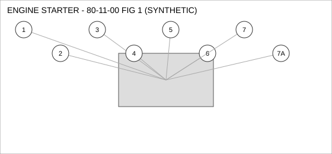
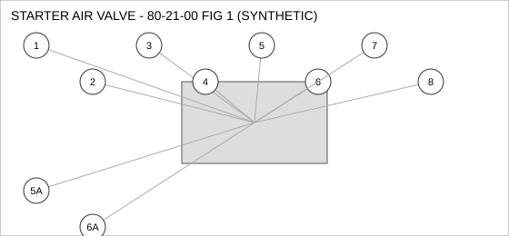
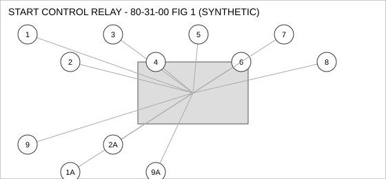
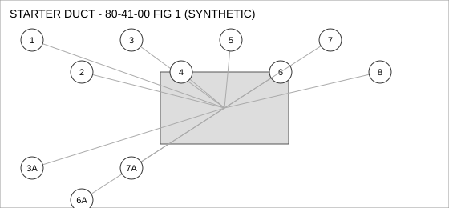

Document type: IPC | Revision: 15 | Fleet: B737
| CODE | AIRCRAFT |
|---|---|
| A | 737-700 |
| B | 737-800 |
| C | 737-MAX8 |

| FIG ITEM | PART NUMBER | NOMENCLATURE | EFFECT | UPA |
|---|---|---|---|---|
| 1 | 162-60829-25 | VALVE - CHECK, ENGINE STARTER | ALL | 1 |
| 2 | 65-84967-17 | SENSOR - TEMPERATURE, ENGINE STARTER | B C | 1 |
| 3 | 65-45247-10 | PUMP - TRANSFER, ENGINE STARTER | ALL | 1 |
| 4 | 65-66973-09 | GASKET, ENGINE STARTER | ALL | 2 |
| 5 | 60-57333-09 | SOLENOID, ENGINE STARTER | ALL | 1 |
| 6 | 285-90828-07 | ACTUATOR - LINEAR, ENGINE STARTER | C | 2 |
| 7 | 60-61864-11 | SWITCH - PRESSURE, ENGINE STARTER | ALL | 4 |
| SUPERSEDED BY 65-72784-11 | ||||
| 7A | 65-72784-11 | SWITCH - PRESSURE, ENGINE STARTER | ALL | 4 |
| REPLACES 60-61864-11. THIS PART MAY REPLACE 60-61864-11; 60-61864-11 MAY NOT BE USED TO REPLACE THIS PART. | ||||

| FIG ITEM | PART NUMBER | NOMENCLATURE | EFFECT | UPA |
|---|---|---|---|---|
| 1 | 162-57843-04 | DUCT - FLEXIBLE, STARTER AIR VALVE | A B | 4 |
| 2 | 285-33583-22 | SOLENOID, STARTER AIR VALVE | ALL | 4 |
| 3 | 162-37479-15 | NUT - SELF-LOCKING, STARTER AIR VALVE | A | 1 |
| 4 | 162-98208-16 | HOSE ASSEMBLY, STARTER AIR VALVE | ALL | 1 |
| 5 | 69-96332-05 | CLAMP - V-BAND, STARTER AIR VALVE | ALL | 2 |
| 5A | 162-53463-26 | CLAMP - V-BAND, STARTER AIR VALVE | B C | 2 |
| ALTERNATE FOR 69-96332-05 ON 737-800, 737-MAX8 ONLY. | ||||
| 6 | 285-72814-19 | ACTUATOR - LINEAR, STARTER AIR VALVE | ALL | 2 |
| 6A | 285-77999-18 | ACTUATOR - LINEAR, STARTER AIR VALVE | ALL | 2 |
| ALTERNATE FOR 285-72814-19. PARTS ARE INTERCHANGEABLE. | ||||
| 7 | 162-81256-02 | SWITCH - PRESSURE, STARTER AIR VALVE | ALL | 1 |
| 8 | 285-87833-21 | FILTER ELEMENT, STARTER AIR VALVE | B C | 1 |

| FIG ITEM | PART NUMBER | NOMENCLATURE | EFFECT | UPA |
|---|---|---|---|---|
| 1 | 60-25213-27 | HOSE ASSEMBLY, START CONTROL RELAY | B C | 1 |
| 1A | 65-57945-11 | HOSE ASSEMBLY, START CONTROL RELAY | A B | 1 |
| INTERCHANGEABLE WITH 60-25213-27 - 737-800 ONLY. | ||||
| 2 | 162-37114-17 | WASHER - LOCK, START CONTROL RELAY | ALL | 2 |
| 2A | 162-79168-21 | WASHER - LOCK, START CONTROL RELAY | ALL | 2 |
| INTERCHANGEABLE WITH 162-37114-17 WHEN SB 80-3109 IS EMBODIED. | ||||
| 3 | 162-69303-11 | FILTER ELEMENT, START CONTROL RELAY | ALL | 1 |
| 4 | 60-12960-28 | PUMP - TRANSFER, START CONTROL RELAY | ALL | 1 |
| 5 | 65-41970-17 | VALVE - CHECK, START CONTROL RELAY | ALL | 1 |
| 6 | 285-65885-15 | NUT - SELF-LOCKING, START CONTROL RELAY | ALL | 1 |
| 7 | 65-93948-22 | SENSOR - PRESSURE, START CONTROL RELAY | C | 2 |
| 8 | 285-35863-15 | FITTING - ELBOW, START CONTROL RELAY | ALL | 4 |
| 9 | 65-36972-09 | SEAL - FLANGE, START CONTROL RELAY | ALL | 1 |
| 9A | 60-98094-05 | SEAL - FLANGE, START CONTROL RELAY | ALL | 1 |
| ALTERNATE FOR 65-36972-09 AFTER INCORPORATION OF SB 80-1042. | ||||

| FIG ITEM | PART NUMBER | NOMENCLATURE | EFFECT | UPA |
|---|---|---|---|---|
| 1 | 162-65448-06 | SENSOR - PRESSURE, STARTER DUCT | ALL | 2 |
| 2 | 65-82733-06 | SEAL - O-RING, STARTER DUCT | ALL | 2 |
| 3 | 69-69113-20 | PUMP - TRANSFER, STARTER DUCT | ALL | 1 |
| SUPERSEDED BY 69-81046-27 | ||||
| 3A | 69-81046-27 | PUMP - TRANSFER, STARTER DUCT | ALL | 1 |
| REPLACES 69-69113-20. THIS PART MAY REPLACE 69-69113-20; 69-69113-20 MAY NOT BE USED TO REPLACE THIS PART. | ||||
| 4 | 162-27895-07 | FILTER ELEMENT, STARTER DUCT | A | 2 |
| 5 | 162-63626-22 | WASHER - LOCK, STARTER DUCT | ALL | 2 |
| 6 | 162-74054-06 | SWITCH - PRESSURE, STARTER DUCT | C | 1 |
| 6A | 65-49021-28 | SWITCH - PRESSURE, STARTER DUCT | C | 1 |
| INTERCHANGEABLE WITH 162-74054-06 (TWO-WAY). | ||||
| 7 | 65-48284-02 | CONNECTOR - ELECTRICAL, STARTER DUCT | ALL | 1 |
| 7A | 162-25386-25 | CONNECTOR - ELECTRICAL, STARTER DUCT | C | 1 |
| ALTERNATE FOR 65-48284-02 ON 737-MAX8 ONLY. | ||||
| 8 | 65-69942-19 | DUCT - FLEXIBLE, STARTER DUCT | ALL | 2 |